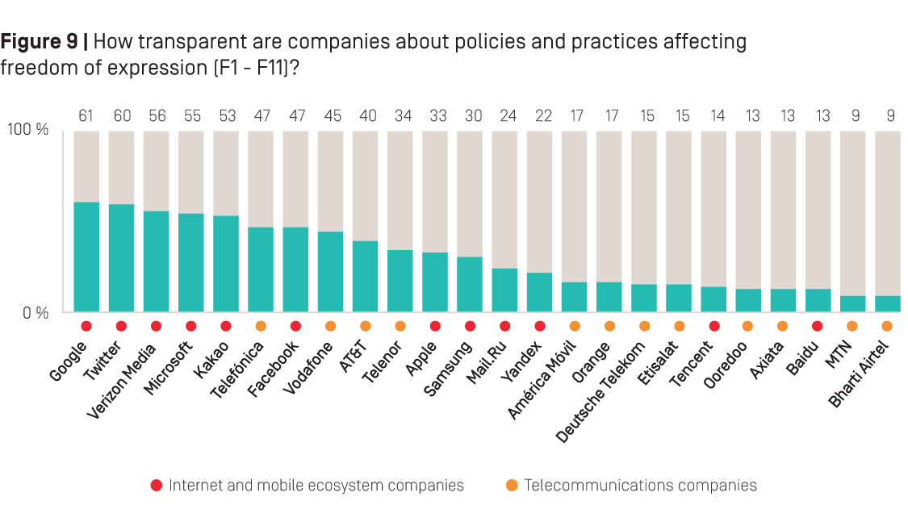

People should aim themselves limit their own freedom of expression in the internet in order to state safe and avoid serious consequences. Not taking care about your digital footprint can lead to serious problems later in life.
Start readingPeople tend to not taking care about consequences. Usually they think they know about what is going to be and how deal with it, so, there is no need to worry about it. But it is really hard to accurately predict the future. Sometimes consequences can be hidden and be long-lasting. It can affect your life after the years when you’ll have already forget about the reasons. That’s why people should aim themselves limit their own freedom of expression especially in the internet in order to state safe and avoid serious consequences.
Freedom of digital expression is an ability to post anything in the internet. It can guarantee you that you are free to share your opinion and post any information which you would like. But your freedom of digital expression can be limited due to other people can track what did you do and some hackers can steal your online personality. Everything you said in past can affect on what you can say in future and how other users will react to your posts. In some situations your freedom of expression can be limited or eliminated at all, and after that, it stops being a freedom. It is important to pay attention on your post, comments and everything you leave in the internet space to avoid unpleasant consequences. As internet users say:
“Internet remembers everything”
So, it is impossible to clean up your digital footprint, and people should take care about how their digital footprint looks like because he stays forever.
Digital footprint can lead to personal information which can be stolen by hackers or companies. Your digital footprint is not only what you post, it could be some metadata which different sites can collect by themselves without asking your permission. Such data as ip adress, your location, passwords, emails, even the model of your computer can easily be stolen. There are many examples of personal data being leaked in big sites and companies such as Facebook or Amazon. Because of that there is big data base with personal information of millions people in dark web. When your data is leaked it is easier to manipulate you. Using your personal information found online hackers can threat by posting your personal information on different sources where you wouldn't want it to be, steal your online money, chat with your friends using your account and steal your online personality to do illegal stuff on your behalf. It is limitation of your digital freedom because now you will do what they want but not you because now some hackers can easily destroy your life. It is not only digital limitation but physical. It can affect you in real world.
You could post something provocative in the past and it can determine people attitude to you in the present. Cancellation culture is developing phenomena nowadays and you can be a victim of it. Many years ago the internet was free and you could post everything you want and it would be considered not serious, just as a joke. But today it can be considered as your real opinion and you won’t be able to justify yourself. That brings a lot of pressure on your online personality, limits what you can say and changes users’ attitude to you. For example, Elon Mask is being canceled every week because he always post something really provocative and debate. Now he has too many haters for a mortal. But he is to powerful and to rich to fill any serious consequences. But many people aren’t. There are many other examples of actors and singers who was cancelled and they lost their jobs and all their contracts. So, cancelled persons can’t really be active influencers in the internet because it’s nearly to impossible to restore the reputation. After somebody found something inappropriate in their digital footprint, such people will meet only the hate. That’s mean now all their opinions are banned and they lose their ability to speak freely in the internet.
According to the statistics not only the society and hackers can be a limitation of expression in the internet but the companies. Many platforms such as Facebook or Google don’t want to see unpleasant content hosted on their site, so they must to regulate contents, thereby limiting the freedom of expression. It is not necessary about your digital footprint and what you did in past, but sometimes you can be banned by a service not a user or hacker. For example, if you broke YouTube rules several time you may lose your ability to publish any videos there.
On the other side, you can be not a worthwhile goal for being leaked or hacked, perhaps no one on the internet is interested in your digital footprint. It is really difficult and wasteful to hack and steal some information in the internet, process of hacking is really hard and complicated, so the information being leaked should be worthwhile. It can be some personal information or provocative posts of some celebrities, and if you are not popular person you can not worry about it. But your money is what you should worry about. If you have huge amounts on your bank account, you will probably being hacked by someone who wants to steal your money. The most users in the internet are not really rich and famous people. The truth is you most likely are not interesting victim of leaking, so you can do whatever you want with your digital footprint. According to stationx.net there were 1,5 billion Facebook accounts had been stolen in 2021. It is nearly the half of all of the accounts. That’s mean somebody from your family or friends definitely has been hacked. But you don’t know such examples, right? That’s because it is not worthwhile target for hackers. This mean, if you are average user of the internet you should not worry about their digital footprint. It is really small chance that leaked data will somehow affect regular user’s freedom of digital expression.
The same situation took place even in the Simpsons. In season 27 episode 10 (russian version) Lisa and her new friends have created an artificial intelligence called “Conrad” which can not only detect your digital footprint but predict the negative effects of your publication. It would be really useful in real world, but it is impossible to do. After all journeys in the episode, Lisa decided to shut down the program.